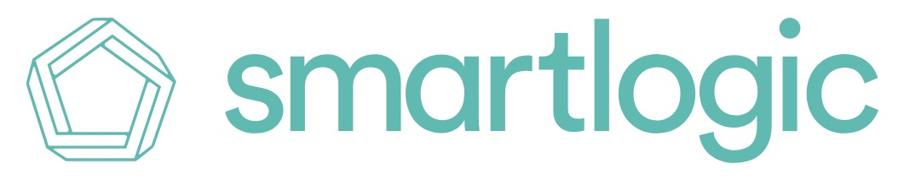

Developer @

defmodule ProjectName do
@moduledoc """
Your bot's description.
"""
alias ProjectName.FastThinking
alias ProjectName.SlowThinking
alias ProjectName.Routine
@recipient_ids [
Application.get_env(:project_name, :fb_page_recipient_id)
]
@doc """
Getter for receiver_id
"""
def recipient_ids(), do: @recipient_ids
@doc """
Main pipeline for the bot.
"""
def respond_to(impression, conversation_state) do
impression
|> FastThinking.run()
|> SlowThinking.run()
|> Routine.runner(conversation_state)
end
end
defmodule YoBot.Routine.Greeting do
@moduledoc """
YoBot's greeting routine.
"""
def run() do
"Yo."
end
end
defmodule YoBot.Routine.Greeting do
@moduledoc """
YoBot's greeting routine.
"""
def run() do
"Yo."
end
end